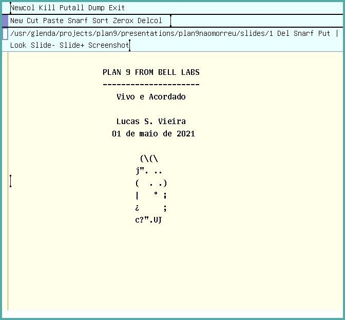
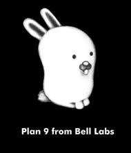
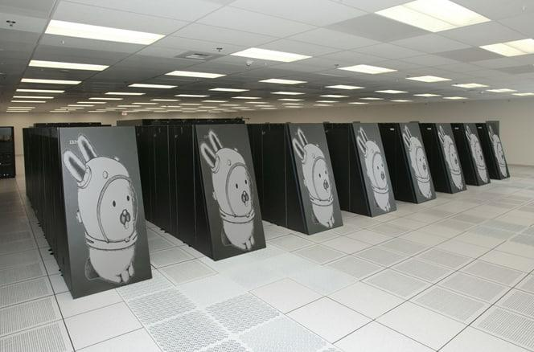

Transcrição em texto-plano da apresentação
Lucas S. Vieira
lucasvieira@protonmail.com
01 de abril de 2021
Os slides a seguir são uma transcrição fiel da forma como foram apresentados, através do editor Acme. Eles não foram feitos para serem vistos no Browser, então tenha paciência.
Para clonar os slides, veja este repositório.

. PLAN 9 FROM BELL LABS . --------------------- . Vivo e Acordado . . Lucas S. Vieira . 01 de maio de 2021 . . (\(\ . j". .. . ( . .) . | ° ¡ . ¿ ; . c?".UJ
Objetivo -------- Mostrar (resumidamente) recursos do Plan 9. Inspirado na palestra "Plan 9: Not dead, just resting" do Ori Bernstein. Mostrar tambem algumas coisas novas desde entao. PERGUNTEM, PERGUNTEM, PERGUNTEM!
O que e o Plan 9? ----------------- - Sistema operacional distribuido; - Dos criadores de Unix, C (e Go); - Vem com coelhinhos incluidos: glenda.jpg; - Nao serve para voce; - Nao serve para ninguem; - Sim, so uso porque tenho probleminhas.
glenda.jpg
Plan 9 nao e Unix ----------------- "Ola! Sou novo usando Plan 9. Estou muito animado para usar esse sistema Linux. Tenho umas perguntas. 1. Como eu executo o X11? 2. Cade o Emacs? 3. O codigo e esquisito. Nao parece nada com GNU C. Os criadores do Plan 9 sabiam programar em C? 4. Tentei rodar o Firefox mas nao funcionou. Por que?" ...esse cara e voce?
Plan 9 nao e Unix ----------------- Algumas diferenças: - root -> sem permissoes por padrao; - sockets -> ver dial(2); - symlinks -> ver bind(1); - pthreads -> ver thread(2); - *.so -> compilaçao estatica; - emacs, vi -> acme(1), sam(1); - gcc, C++, etc -> 2c(1), 2l(1); - Makefile, CMake -> mk(1).
Plan 9 nao foi feito para Web ----------------------------- "Se voce nao consegue imaginar o uso de um computador que nao envolva um web browser, Plan 9 pode nao ser algo para voce." -- https://fqa.9front.org/fqa0.html#0.1.3
Web para Hipsters ----------------- Se voce ainda assim tiver necessidade visceral de usar um browser, temos placebo semi-funcional para voce: - abaco (boa sorte); - mothra; - netsurf (desde 2020).
Filosofia do Sistema -------------------- Esqueça os ultimos 40 anos de legado do Unix. - Everything is a file tree: Todos os recursos sao acessados como arquivos em um FS hierarquico; - Protocolo 9P: Unico e transparente p/ acessar recursos, independente de sua localizaçao; - Namespaces privados: Cada processo customiza sua "visao do mundo" dos recursos da rede. Vide: /net, /mnt/factotum (auth), /dev/draw, /proc, /env, /mail/fs, /dev/window, /dev/screen...
Exemplos
--------
-> Screenshot da tela
cat /dev/screen | topng >$home/foto.png
-> Requisiçao HTTP
#include <u.h>
#include <libc.h>
...
fd = dial(netmkaddr("exemplo.com", "tcp", "8080"), 0, 0, 0);
if(fd < 0) {
sysfatal("dial: Impossivel conectar: %r");
exits("dial");
}
Exemplos -------- -> Rio - Funciona como um editor de texto. - Programas usam suas features (plumber, chording, tab completion). -> acme(1) - Janelas stack-based. - Todo o texto e editavel e executavel. - Interface com o FS leva a programabilidade. - Editar/visualizar email, wiki, debugger...
Exemplos -------- -> plumber(4) - Interacao interprocessos via texto; - Flexivel, poderoso, programavel (via regras); - Funciona atraves da rede. Exemplo: Vamos visitar https://unsafe.rs. -> Email - Acessivel via nedmail(1) e acme(1); - faces(1).
Blue Gene[1] --------- Arquitetura de supercomputador em cluster. Cinco tipos de conexoes, quatro exclusivas da arquitetura. Protocolos de comunicacao entre vizinhos (Torus) e de roteamento de mensagens em grupos (Tree) de/para servidores de I/O, conectados a internet (Ethernet). Plan 9 foi usado nos computadores do cluster (I/O usava Linux). [1] bluegene.jpg
bluegene.jpg
Prospectos ---------- Plan 9 precisa de uma comunidade! - Bootcamps do SDF.org com acesso temporario gratis; - Lista de emails amigavel: plan9-l@sdf.org; - Popular entre Golangueiros; - Implementacoes de 9P em Rust/Tokio[1]. [1] https://github.com/pfpacket/rust-9p
Conclusao --------- Plan 9 compartilha principios com o Unix, apesar de suas enormes diferenças. Muito pode ser aprendido com o uso e as ideias do Plan 9. Ha problemas discutidos atualmente que foram abordados indiretamente no design do Plan 9. Plan 9 pode surpreender com soluçoes simples e impensadas para tais problemas.
. . . . . . . OBRIGADO . -------- . Perguntas? . . . . .
Referencias ----------- BERNSTEIN, O. Plan 9: Not dead, just resting. Video: https://youtu.be/6m3GuoaxRNM FORSYTH, C; MCKIE, J.; MINNICH, R.; HENSBERGEN, E. V. Night of the Lepus: A Plan 9 Perspective on Blue Gene's Interconnects. Link: http://doc.cat-v.org/plan_9/blue_gene/night_of_the_lepus/ PEREIRA, U. The Unix Spirit set free: Plan 9 from Bell Labs. FOSDEM 2006. Video: https://youtu.be/VJSlvoUFkBA. Slides: http://9front.org/extra/uriel.slides.tgz MYRLAND, D. Plan 9 Desktop Guide. Link: https://pspodcasting.net/dan/blog/2019/plan9_desktop.html BALLESTEROS, F. J. Introduction to Operating Systems Abstractions using Plan 9 from Bell Labs. 2007.